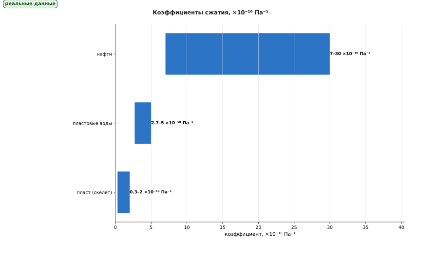

Путь › От баланса массы к форме профиля давления › Шаг 11 из 60
Как упростить накопление массы
В книге: «Вывод дифференциального уравнения фильтрации упругой жидкости в упругой пористой среде по закону Дарси» стр. 479–480
Опирается на: шаг 10 «Одно уравнение для давления» (предпосылка), шаг 8 «Какие свойства зависят от давления» (предпосылка), шаг 5 «Один коэффициент для жидкости и пласта» (предпосылка)
Суть
Произведение пористости и плотности раскладывают и отбрасывают малый квадратичный член.
Тогда скорость накопления массы пропорциональна скорости изменения давления.
Сжимаемость при этом не исчезает: остаётся совместный вклад жидкости и породы.
Пороговая идея. Сжимаемость не исчезает при линеаризации: в накоплении массы остается совместный вклад жидкости и породы. модель
Как это работает
Механизм
Левую часть баланса массы преобразуют. Плотность и пористость подставляют из уравнений состояния жидкости и породы. стр. 479
«Теперь преобразуем выражение в левой части уравнения (23.12), для чего используем уравнения состояния упругой жидкости и упругой пористой среды (23.10) и (23.11)»
Произведение даёт три члена: исходный, линейный и квадратичный по изменению давления. Квадратичным членом пренебрегают — он мал по сравнению с двумя другими. стр. 479
«Последним слагаемым в правой части полученного выражения ввиду его малости по сравнению с двумя другими слагаемыми можно пренебречь»
Почему квадратичный член мал
Коэффициенты сжатия очень малы. Для нефтей коэффициент объёмного сжатия лежит от 7·10⁻¹⁰ Па⁻¹ до 30·10⁻¹⁰ Па⁻¹. стр. 479
«для нефтей $\beta_\text{ж}$ изменяется в диапазоне от $7\cdot10^{-10}$ Па$^{-1}$ до $30\cdot10^{-10}$ Па$^{-1}$,»

Для пластовых вод диапазон от 2,7·10⁻¹⁰ Па⁻¹ до 5·10⁻¹⁰ Па⁻¹. стр. 479
«а для пластовых вод диапазон изменения лежит в пределах от $2,7\cdot10^{-10}$ Па$^{-1}$ до $5\cdot10^{-10}$ Па$^{-1}$,»
Коэффициент объёмной упругости пласта составляет (0,3–2)·10⁻¹⁰ Па⁻¹. Произведение двух таких малых чисел ещё меньше. стр. 479
«и что коэффициент объемной упругости пласта составляет $\beta_\text{с} = (0,3 - 2)\cdot10^{-10}$ Па$^{-1}$).»
Что получается
Линейную часть выражают через упругоёмкость — общий коэффициент упругости жидкости и скелета. Это и есть линеаризация. стр. 479
Затем линейное произведение дифференцируют по времени. Получается член накопления массы: начальная плотность, умноженная на упругоёмкость и скорость изменения давления. стр. 480
«откуда после дифференцирования выражения по времени $t$ находим»
По шагам
Как линеаризовать накопление
- Подставьте уравнения состояния в пористость и плотность. стр. 479
- Раскройте произведение и отбросьте малый квадратичный член. стр. 479
- Выразите линейный член через упругоёмкость и продифференцируйте по времени. стр. 480
Цифры и условия
- Нефти: коэффициент объёмного сжатия от 7·10⁻¹⁰ до 30·10⁻¹⁰ Па⁻¹. стр. 479
- Пластовые воды: от 2,7·10⁻¹⁰ до 5·10⁻¹⁰ Па⁻¹. стр. 479
- Пласт: коэффициент объёмной упругости (0,3–2)·10⁻¹⁰ Па⁻¹. стр. 479
Формулы
Линейные зависимости плотности и пористости, подставляемые в произведение. стр. 479
| Обозначение | Что это | Единицы |
|---|---|---|
| $\rho$ | плотность жидкости | кг/м³ |
| $\rho_0$ | плотность при начальном давлении | кг/м³ |
| $\beta_{\text{ж}}$ | объемная сжимаемость жидкости | Па⁻¹ |
| $p$ | пластовое давление | Па |
| $p_0$ | начальное давление | Па |
| $m$ | пористость | безразмерная |
| $m_0$ | пористость при начальном давлении | безразмерная |
| $\beta_{\text{с}}$ | объемная упругость пористой среды | Па⁻¹ |
Произведение с исходным, линейным и квадратичным членами. стр. 479
| Обозначение | Что это | Единицы |
|---|---|---|
| $m$ | пористость | безразмерная |
| $\rho$ | плотность жидкости | кг/м³ |
| $m_0$ | пористость при начальном давлении | безразмерная |
| $\rho_0$ | плотность при начальном давлении | кг/м³ |
| $\beta_{\text{ж}}$ | объемная сжимаемость жидкости | Па⁻¹ |
| $\beta_{\text{с}}$ | объемная упругость пористой среды | Па⁻¹ |
| $p$ | пластовое давление | Па |
| $p_0$ | начальное давление | Па |
Линейное произведение через упругоемкость. стр. 480
| Обозначение | Что это | Единицы |
|---|---|---|
| $m$ | пористость | безразмерная |
| $\rho$ | плотность жидкости | кг/м³ |
| $m_0$ | пористость при начальном давлении | безразмерная |
| $\rho_0$ | плотность при начальном давлении | кг/м³ |
| $\beta^*$ | упругоемкость пласта | Па⁻¹ |
| $p$ | пластовое давление | Па |
| $p_0$ | начальное давление | Па |
Член накопления как скорость изменения давления, умноженная на начальную плотность и упругоемкость. стр. 480
| Обозначение | Что это | Единицы |
|---|---|---|
| $m$ | пористость | безразмерная |
| $\rho$ | плотность жидкости | кг/м³ |
| $t$ | время | с |
| $\rho_0$ | плотность при начальном давлении | кг/м³ |
| $\beta^*$ | упругоемкость пласта | Па⁻¹ |
| $p$ | пластовое давление | Па |
Что это значит для данных
Пористость и плотность вместе определяют, как быстро меняется масса в порах.
- Вход
- Начальные пористость и плотность, коэффициенты упругости, давление и его изменение во времени.
- Выход
- Линейная оценка изменения массы по давлению.
- Где ломается
- Квадратичный член нельзя отбрасывать без проверки его малости.
Где здесь ручной труд специалиста
- Входные данные
- Коэффициенты жидкости и скелета и изменение давления.
- Ручные шаги
- Сверить тип жидкости и единицы, сравнить члены произведения.
- Точки суждения
- Проверить, достаточно ли мал квадратичный вклад.
- Время
- Невелико при согласованных входах.
- Типичные ошибки
- Подменить диапазон коэффициента одной универсальной величиной.
Аналогия модель
Как отбросить малую поправку в вычислении, не зануляя основной эффект.
Где аналогия перестаёт работать: Значимость поправки определяется физическим диапазоном давления, а не только размером коэффициента.
Новые понятия
- накопление массы
- Изменение массы жидкости, приходящейся на единицу объема пласта. модель
- линеаризация
- Приближение выражения постоянной частью и частью, пропорциональной изменению давления. модель
- упругоемкость
- Объединенный коэффициент влияния упругости жидкости и скелета. модель
Проверь себя
Верный ответ: Он мал по сравнению с двумя другими слагаемыми
Коэффициенты сжатия малы, их произведение ещё меньше. Где это в тексте (стр. 479) →
Верный ответ: Нефти: от 7·10⁻¹⁰ до 30·10⁻¹⁰ Па⁻¹; Пластовые воды: от 2,7·10⁻¹⁰ до 5·10⁻¹⁰ Па⁻¹; Пласт: (0,3–2)·10⁻¹⁰ Па⁻¹
Диапазон 7–30 относится к нефтям, а не к пласту. Где это в тексте (стр. 479) →
Источник
Все утверждения шага с дословной цитатой автора и страницей книги (по PDF).
Левую часть баланса преобразуют через уравнения состояния жидкости и породы. наблюдение
«Теперь преобразуем выражение в левой части уравнения (23.12), для чего используем уравнения состояния упругой жидкости и упругой пористой среды (23.10) и (23.11)»
Квадратичным членом произведения плотности и пористости пренебрегают из-за малости относительно двух других слагаемых. вывод
«Последним слагаемым в правой части полученного выражения ввиду его малости по сравнению с двумя другими слагаемыми можно пренебречь»
Для нефтей коэффициент объемного сжатия лежит от $7\cdot10^{-10}$ Па$^{-1}$ до $30\cdot10^{-10}$ Па$^{-1}$. наблюдение
«для нефтей $\beta_\text{ж}$ изменяется в диапазоне от $7\cdot10^{-10}$ Па$^{-1}$ до $30\cdot10^{-10}$ Па$^{-1}$,»
Для пластовых вод диапазон лежит от $2,7\cdot10^{-10}$ Па$^{-1}$ до $5\cdot10^{-10}$ Па$^{-1}$. наблюдение
«а для пластовых вод диапазон изменения лежит в пределах от $2,7\cdot10^{-10}$ Па$^{-1}$ до $5\cdot10^{-10}$ Па$^{-1}$,»
Коэффициент объемной упругости пласта составляет $(0,3 - 2)\cdot10^{-10}$ Па$^{-1}$. наблюдение
«и что коэффициент объемной упругости пласта составляет $\beta_\text{с} = (0,3 - 2)\cdot10^{-10}$ Па$^{-1}$).»
Чтобы получить член накопления массы, линейное произведение дифференцируют по времени. вывод
«откуда после дифференцирования выражения по времени $t$ находим»
На этот шаг опираются: шаг 13 «Как работает уравнение пьезопроводности».